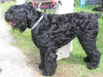

Chó sục Nga đen, Chó sục Nga đen là những con chó sục cỡ vừa xuất xứ từ Nga thời Liên Xô cũ. Loài chó này mạnh mẽ và khỏe khoắn với một hệ thần kinh tốt. To lớn, khỏe mạnh, vững vàng và cảnh giác. Vào tháng 5 năm 1984 loài này được công nhận. Loài này được nuôi để trông nhà cửa
Những con Black Russian Terriers lớn hơn những con chó cỡ vừa. Con đực cao 64–74 cm, con cái cao 64–72 cm. Chênh lệch khoảng 3 cm. Sẽ nhiều hơn nếu con đực phát triển tốt. Nặng tầm 36–65 kg. Con đực lớn hơn và đồ sộ hơn con cái. Chiều dài của thân cân đối với chiều cao – tạo nên một dáng vẻ vuông vắn. Vai nhô vượt lưng và cổ họng xiên chếnh dần xuống phía đuôi. Không nên có yếm cổ trễ đung đưa hoặc to quá mức. Bàn chân như chân gấu rất rộng với những đệm thịt dày, đen, cứng và những chiếc móng lớn cũng màu đen.
Thân thể cân đối, khi nằm xuống tạo thành hình chữ nhật. Lưng thoải dần xuống mông. Chân trước thẳng khỏe. Vai rộng, săn chắc, và rẩt phát triển với khung xương rộng và sâu. Khuỷu chân không được chếch vào trong hoặc ra ngoài. Bốn chân được bao phủ bởi lông thô dài từ 2 đến 4 inches (từ 5–10 cm). Bàn chân rẩt rộng được che phủ hoàn toàn bởi lông và với những đệm thịt lớn màu đen. Thân sau xương khỏe và cơ bắp. Bốn chân thẳng tắp.
Black Russian Terriers dũng cảm và rất nhanh mắt. Nghi ngờ người lạ, chúng có một bản năng bảo vệ mạnh mẽ mà xuất hiện vào một năm đến hai năm rưỡi tuổi đời. Những cún con đang phát triển nên được đối xử một cách yêu thương nhưng kiên định, để lái chúng theo đúng hướng. Những cún con nhạy cảm, thích đùa nghịch, dễ thích nghi và học nhanh. Chúng tò mò và tham gia vào mọi chuyện. Thậm chí như một con vật trưởng thành, chúng hăng hái chơi đùa với trẻ nhỏ. Loài này rất thích tiếp xúc với mọi người và vật.
BRT có tính cách mạnh mẽ và vững vàng. Chúng tránh đánh nhau với những con chó khác, mặc dù những con đực không thể sống với những con chó lớn khác có tính thống trị nếu chủ nhân không hoàn toàn có vị trí Anpha đối với chúng. Loài này có thể dễ dàng sống với những con chó không có tính thống trị hoặc những con chó nhỏ, mèo, ngựa, thỏ,...Chúng dễ dàng làm hỏng đồ đạc và chịu dây xích. BRT thích những bài huấn luyện và yêu thích làm hài lòng chủ nhân.
Loài này chỉ sủa khi chúng cảm thấy cần thiết. Phản ứng nhanh, chúng luôn sẵn sàng để bảo vệ chủ nhân và ngôi nhà của chúng. Black Russian Terriers là những con lâu trưởng thành. Nếu con chó được dẫn dắt một cách vững vàng khi còn non, chỉ nên cho nó ngủ trên giường, ghế dài, bàn khi còn non nếu sẵn lòng cho phép. Cún con trong sau một năm nó sẽ trưởng thành và mạnh mẽ. Dễ dàng sống trong nhà mà không cần chăm sóc nhiều. Chúng không nên sống trong chuồng ngoài trời bởi vì những con chó sẽ nhận được ít quan tâm và khuyến khích.
Vận động thể chất và tinh thần hàng ngày là quan trọng nhằm giải phóng năng lượng cho con chó. Nếu để con vật tích tụ năng lượng bên trong nó sẽ gây ra những vấn đề về hành vi. Con chó không được chạy trước, nên để nó chạy bên cạnh hoặc phía sau nhằm cũng cố cho con vật biết vị trí của nó. Trong tư tưởng của nó, chủ nhân luôn đi đầu. Sự dẫn dắt kiên định và liên hệ gần gũi với gia đình sẽ đêm lại những kết quả tốt nhất. Nếu loài chó này bị nhốt cách ly, xa rời gia đình mà không được dẫn dắt, nó sẽ học cách bảo vệ một cách phù hợp và có thể một ngày nó sẽ canh gác cũi và chống lại ý muốn chủ nhân.